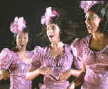

DVD Review Archive
Feature Archive Links DVD MIA DVD
Alerts Movie Posters Laser Site Info Home E-mail
© 2002 Films on Disc Stuart J. Kobak ALL RIGHTS RESERVED.
|
|
 Biopics tend to follow formulaic paths, depicting incidents in the life of an important person, but often lacking the dramatic story line to impart power to the tale. Introducing Dorothy Dandridge, from a biography by Earl Mills, may not avoid those typical pitfalls, but it does have Halle Berry in as an amazing force in the title role.Berry is the center of gravity for the biography of the young black actress who's promising career ultimately did not pass "Go." Dorothy starts out as part of girl singing act and winds up in the arms of big time black dancer, Harold Nicholas, played with lots of enthusiasm by Obba Babbtunde. Propelling Dorothy into the spotlight, the initial charm of Nicholas's courtship turns into a marriage with tragedy at its heart. Their daughter is born with severe mental limitations and this, coupled with Nicholas's roving eye for the ladies, puts a unbearable strain on their marriage. But Dorothy moves on. Living in Hollywood, Dorothy gets a few shots in minor movies, but her career turns around with the introduction of agent/mentor Earl Mills. Mills, as played by Star Trek: Next Generation mainstay Brent Spiner, is a rather boring guy, and he has a big part in this Dorothy Dandridge story since it is based on his biography of the actress. Mills gets Dorothy a shot at the starring role in Otto Preminger's all black Hollywood musical, Carmen Jones. Dorothy sells herself for the role so well that she captures the heart of director Preminger as well. Their romantic liaison forms one the pillars of this Dandridge story, but it never ignites the fire needed. Klaus Maria Brandauer is effective in the role. Rebounding from Preminger, Dorothy scrapes the bottom of the romantic barrel in her marriage to promoter and con man Jack Dennison. There are short set pieces in which Dorothy stands up to the ugly face of racial prejudice, but these are standard scenes meant more to learn about Dorothy's character than the racial climate of the period. Family relationships reveal more about what events shaped Dorothy's character, contributing to her eventual downfall. Framed from a conventional biopic device of Dorothy looking back on her career, the script wanders in a fairly chronological order, making it easy enough to follow. Some time periods are shadowy and compressed, but this is the nature of the biopic beast. Martha Coolidge sits the director's chair on solid ground, but in the end, it is the fascination of watching Berry perform in this charismatic role that makes Introducing Dorothy Dandridge a cut about the typical biopic. Considering the original television origin, Introducing Dorothy Dandridge has some excellent production values. Maybe it's the way Halle Berry fills up those dresses, but they sure look glamorous and period authentic. The costumes and sets never betray budget limitations and that's high praise indeed. The full frame transfer is easy watching, without standing out in any area. It's sharp enough, colors rich enough and the Dolby Digital 2-channel sound is consistently clean. Perhaps the DVD could have used a bit more visual punch, but nothing stands in the way of enjoying the Berry performance and the fine production design.
|
The Feature
Archive has articles
ranging from John Ford to Blonde
Bimbos, The
Heistmasters, Akira
Kurosawa and Frank
Darabont. Imaging
Science Foundation HOT
LINKS The
Home Theater Forum Home
Theater Reference Reviewing System
|